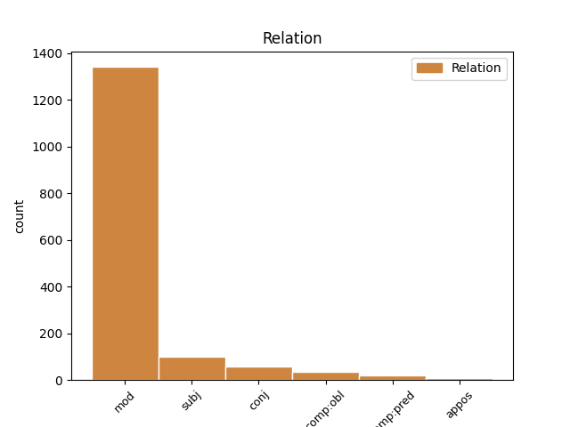
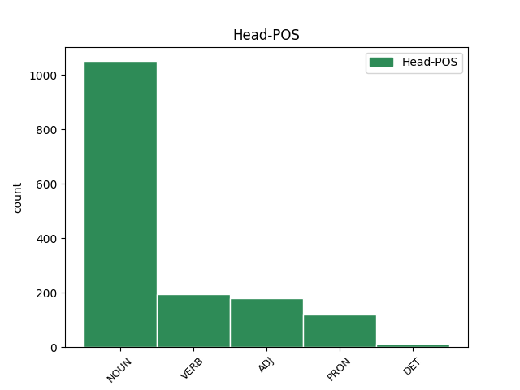
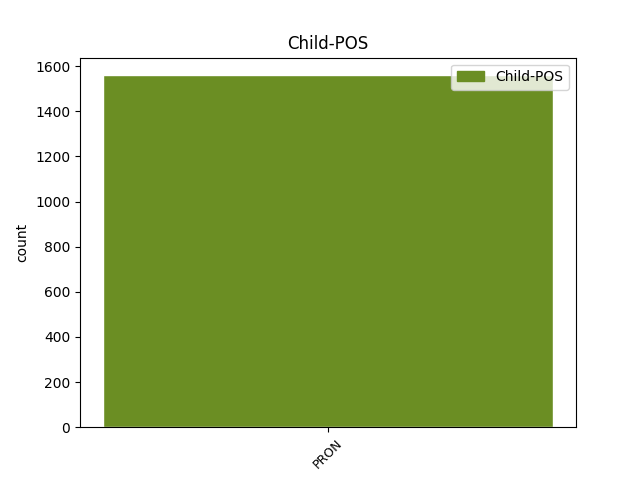

Distribution of features within this leaf



Agreement Rules sorted by frequency.
- When the dependent token is the modifer(mod) of the head token, and the dependent token is PRON.
1 λευρὸν _ _ _ _ 0 _ _ _
2 κατ̓ _ _ _ _ 0 _ _ _
3 ἄλσος ἄλσος NOUN n-s---na- Case=Acc|Gender=Neut|Number=Sing 0 _ _ _
4 νῦν _ _ _ _ 0 _ _ _
5 ἐπιστρέφου _ _ _ _ 0 _ _ _
6 τόδε ὅδε PRON p-s---na- Case=Acc|Gender=Neut|Number=Sing 3 mod _ SpaceAfter=No
7 . _ _ _ _ 0 _ _ _
1 πλεονάκις _ _ _ _ 0 _ _ _
2 δὲ _ _ _ _ 0 _ _ _
3 τούτου οὗτος PRON p-s---ng- Case=Gen|Gender=Neut|Number=Sing 4 subj _ _
4 γινομένου γίγνομαι VERB v-sppeng- Case=Gen|Gender=Neut|Number=Sing|Tense=Pres|VerbForm=Part|Voice=Mid 0 _ _ _
5 , _ _ _ _ 0 _ _ _
6 καὶ _ _ _ _ 0 _ _ _
7 τῶν _ _ _ _ 0 _ _ _
8 ἀνδρῶν _ _ _ _ 0 _ _ _
9 τυραννίδος _ _ _ _ 0 _ _ _
10 ἐπιθυμούντων _ _ _ _ 0 _ _ _
11 , _ _ _ _ 0 _ _ _
12 ὁ _ _ _ _ 0 _ _ _
13 δῆμος _ _ _ _ 0 _ _ _
14 ἐπηνέχθη _ _ _ _ 0 _ _ _
15 μιμήσασθαι _ _ _ _ 0 _ _ _
16 τοὺς _ _ _ _ 0 _ _ _
17 Ἀθηναίους _ _ _ _ 0 _ _ _
18 , _ _ _ _ 0 _ _ _
19 καὶ _ _ _ _ 0 _ _ _
20 νόμον _ _ _ _ 0 _ _ _
21 θεῖναι _ _ _ _ 0 _ _ _
22 παραπλήσιον _ _ _ _ 0 _ _ _
23 τῷ _ _ _ _ 0 _ _ _
24 παῤ _ _ _ _ 0 _ _ _
25 ἐκείνοις _ _ _ _ 0 _ _ _
26 γεγραμμένῳ _ _ _ _ 0 _ _ _
27 περὶ _ _ _ _ 0 _ _ _
28 ὀστρακισμοῦ _ _ _ _ 0 _ _ _
29 . _ _ _ _ 0 _ _ _
1 ἢ _ _ _ _ 0 _ _ _
2 τοῖσιν ὁ PRON p-p---md- Case=Dat|Gender=Masc|Number=Plur 0 _ _ _
3 ἢ _ _ _ _ 0 _ _ _
4 τοῖς ὁ PRON p-p---md- Case=Dat|Gender=Masc|Number=Plur 2 conj _ _
5 πόλεμον _ _ _ _ 0 _ _ _
6 αἴρεσθαι _ _ _ _ 0 _ _ _
7 μέγαν _ _ _ _ 0 _ _ _
8 πᾶσ̓ _ _ _ _ 0 _ _ _
9 ἔστ̓ _ _ _ _ 0 _ _ _
10 ἀνάγκη _ _ _ _ 0 _ _ _
11 , _ _ _ _ 0 _ _ _
12 καὶ _ _ _ _ 0 _ _ _
13 γεγόμφωται _ _ _ _ 0 _ _ _
14 σκάφος _ _ _ _ 0 _ _ _
15 στρέβλαισι _ _ _ _ 0 _ _ _
16 ναυτικαῖσιν _ _ _ _ 0 _ _ _
17 ὡς _ _ _ _ 0 _ _ _
18 προσηγμένον _ _ _ _ 0 _ _ _
19 . _ _ _ _ 0 _ _ _
1 τοῦ _ _ _ _ 0 _ _ _
2 θέρους _ _ _ _ 0 _ _ _
3 δὲ _ _ _ _ 0 _ _ _
4 ἀρχομένου _ _ _ _ 0 _ _ _
5 στρατηγὸν _ _ _ _ 0 _ _ _
6 ἕτερον _ _ _ _ 0 _ _ _
7 κατέστησαν _ _ _ _ 0 _ _ _
8 , _ _ _ _ 0 _ _ _
9 ᾧ ὅς PRON p-s---md- Case=Dat|Gender=Masc|Number=Sing 12 comp:obl _ _
10 δύναμιν _ _ _ _ 0 _ _ _
11 ἀξιόλογον _ _ _ _ 0 _ _ _
12 δόντες δίδωμι VERB v-papamn- Case=Nom|Gender=Masc|Number=Plur|Tense=Past|VerbForm=Part|Voice=Act 0 _ _ _
13 προσέταξαν _ _ _ _ 0 _ _ _
14 καταπολεμῆσαι _ _ _ _ 0 _ _ _
15 Δουκέτιον _ _ _ _ 0 _ _ _
16 . _ _ _ _ 0 _ _ _
1 οὐ _ _ _ _ 0 _ _ _
2 γὰρ _ _ _ _ 0 _ _ _
3 ἑτέρων _ _ _ _ 0 _ _ _
4 πεπυσμένος _ _ _ _ 0 _ _ _
5 , _ _ _ _ 0 _ _ _
6 ἀλλ̓ _ _ _ _ 0 _ _ _
7 αὐτὸς αὐτός PRON p-s---mn- Case=Nom|Gender=Masc|Number=Sing 10 comp:pred _ _
8 ἔργῳ _ _ _ _ 0 _ _ _
9 πεῖραν _ _ _ _ 0 _ _ _
10 εἰληφὼς λαμβάνω VERB v-srpamn- Aspect=Perf|Case=Nom|Gender=Masc|Number=Sing|Tense=Past|VerbForm=Part|Voice=Act 0 _ _ _
11 ἐγίνωσκε _ _ _ _ 0 _ _ _
12 πόσῳ _ _ _ _ 0 _ _ _
13 τῆς _ _ _ _ 0 _ _ _
14 τῶν _ _ _ _ 0 _ _ _
15 Περσῶν _ _ _ _ 0 _ _ _
16 τρυφῆς _ _ _ _ 0 _ _ _
17 ἡ _ _ _ _ 0 _ _ _
18 πάτριος _ _ _ _ 0 _ _ _
19 δίαιτα _ _ _ _ 0 _ _ _
20 πρὸς _ _ _ _ 0 _ _ _
21 ἀρετὴν _ _ _ _ 0 _ _ _
22 διέφερεν _ _ _ _ 0 _ _ _
23 . _ _ _ _ 0 _ _ _
1 οἱ _ _ _ _ 0 _ _ _
2 δὲ _ _ _ _ 0 _ _ _
3 αὐτῶν _ _ _ _ 0 _ _ _
4 ἀπὸ _ _ _ _ 0 _ _ _
5 τοῦ _ _ _ _ 0 _ _ _
6 πρυτανηίου _ _ _ _ 0 _ _ _
7 τοῦ _ _ _ _ 0 _ _ _
8 Ἀθηναίων _ _ _ _ 0 _ _ _
9 ὁρμηθέντες ὁρμάω VERB v-pappmn- Case=Nom|Gender=Masc|Number=Plur|Tense=Past|VerbForm=Part|Voice=Pass 0 _ _ _
10 καὶ _ _ _ _ 0 _ _ _
11 νομίζοντες _ _ _ _ 0 _ _ _
12 γενναιότατοι _ _ _ _ 0 _ _ _
13 εἶναι _ _ _ _ 0 _ _ _
14 Ἰώνων _ _ _ _ 0 _ _ _
15 , _ _ _ _ 0 _ _ _
16 οὗτοι οὗτος PRON p-p---mn- Case=Nom|Gender=Masc|Number=Plur 9 appos _ _
17 δὲ _ _ _ _ 0 _ _ _
18 οὐ _ _ _ _ 0 _ _ _
19 γυναῖκας _ _ _ _ 0 _ _ _
20 ἠγάγοντο _ _ _ _ 0 _ _ _
21 ἐς _ _ _ _ 0 _ _ _
22 τὴν _ _ _ _ 0 _ _ _
23 ἀποικίην _ _ _ _ 0 _ _ _
24 ἀλλὰ _ _ _ _ 0 _ _ _
25 Καείρας _ _ _ _ 0 _ _ _
26 ἔσχον _ _ _ _ 0 _ _ _
27 , _ _ _ _ 0 _ _ _
28 τῶν _ _ _ _ 0 _ _ _
29 ἐφόνευσαν _ _ _ _ 0 _ _ _
30 τοὺς _ _ _ _ 0 _ _ _
31 γονέας _ _ _ _ 0 _ _ _
32 . _ _ _ _ 0 _ _ _
Disagree Examples:
1 καὶ _ _ _ _ 0 _ _ _
2 οὔτε _ _ _ _ 0 _ _ _
3 ἡ _ _ _ _ 0 _ _ _
4 Ἄρτεμις Ἄρτεμις NOUN n-s---fn- Case=Nom|Gender=Fem|Number=Sing 0 _ _ _
5 ἡ _ _ _ _ 0 _ _ _
6 περισσῶς _ _ _ _ 0 _ _ _
7 ἀγαπήσασα _ _ _ _ 0 _ _ _
8 οὔτε _ _ _ _ 0 _ _ _
9 τῶν _ _ _ _ 0 _ _ _
10 ἄλλων _ _ _ _ 0 _ _ _
11 θεῶν _ _ _ _ 0 _ _ _
12 τις τις PRON p-s---mn- Case=Nom|Gender=Masc|Number=Sing 4 conj _ _
13 ἢ _ _ _ _ 0 _ _ _
14 δαιμόνων _ _ _ _ 0 _ _ _
15 ἐβοήθησεν _ _ _ _ 0 _ _ _
16 αὐτῷ _ _ _ _ 0 _ _ _
17 . _ _ _ _ 0 _ _ _
1 οὒ _ _ _ _ 0 _ _ _
2 ποτέ _ _ _ _ 0 _ _ _
3 σου σύ PRON p-s---mg- Case=Gen|Gender=Masc|Number=Sing 4 mod _ _
4 φιλότης φιλότης NOUN n-s---fn- Case=Nom|Gender=Fem|Number=Sing 0 _ _ _
5 γηράσεται _ _ _ _ 0 _ _ _
6 οὐδὲ _ _ _ _ 0 _ _ _
7 θανεῖται _ _ _ _ 0 _ _ _
8 , _ _ _ _ 0 _ _ _
9 ἒς _ _ _ _ 0 _ _ _
10 τ̓ _ _ _ _ 0 _ _ _
11 ἂν _ _ _ _ 0 _ _ _
12 ὕδωρ _ _ _ _ 0 _ _ _
13 οἴνῳ _ _ _ _ 0 _ _ _
14 συμμιγνύμενον _ _ _ _ 0 _ _ _
15 κυλίκεσσι _ _ _ _ 0 _ _ _
16 παῖς _ _ _ _ 0 _ _ _
17 διαπομπεύῃ _ _ _ _ 0 _ _ _
18 , _ _ _ _ 0 _ _ _
19 προπόσεις _ _ _ _ 0 _ _ _
20 ἐπὶ _ _ _ _ 0 _ _ _
21 δεξιὰ _ _ _ _ 0 _ _ _
22 νωμῶν _ _ _ _ 0 _ _ _
23 , _ _ _ _ 0 _ _ _
24 παννυχίδας _ _ _ _ 0 _ _ _
25 θ̓ _ _ _ _ 0 _ _ _
26 ἱερὰς _ _ _ _ 0 _ _ _
27 θήλεις _ _ _ _ 0 _ _ _
28 χοροὶ _ _ _ _ 0 _ _ _
29 ἀμφιέπωσιν _ _ _ _ 0 _ _ _
30 , _ _ _ _ 0 _ _ _
31 πλάστιγξ _ _ _ _ 0 _ _ _
32 θ̓ _ _ _ _ 0 _ _ _
33 ἡ _ _ _ _ 0 _ _ _
34 χαλκοῦ _ _ _ _ 0 _ _ _
35 θυγάτηρ _ _ _ _ 0 _ _ _
36 ἐπ̓ _ _ _ _ 0 _ _ _
37 ἄκραισι _ _ _ _ 0 _ _ _
38 καθίζῃ _ _ _ _ 0 _ _ _
39 κοττάβου _ _ _ _ 0 _ _ _
40 ὑψηλαῖς _ _ _ _ 0 _ _ _
41 κορυφαῖς _ _ _ _ 0 _ _ _
42 Βρομίου _ _ _ _ 0 _ _ _
43 ψακάδεσσιν _ _ _ _ 0 _ _ _
44 . _ _ _ _ 0 _ _ _
1 καί _ _ _ _ 0 _ _ _
2 ποτε _ _ _ _ 0 _ _ _
3 καὶ _ _ _ _ 0 _ _ _
4 μεθ̓ _ _ _ _ 0 _ _ _
5 ἡμέραν _ _ _ _ 0 _ _ _
6 ἐλθὼν _ _ _ _ 0 _ _ _
7 ἔκ _ _ _ _ 0 _ _ _
8 τινος _ _ _ _ 0 _ _ _
9 πότου _ _ _ _ 0 _ _ _
10 καὶ _ _ _ _ 0 _ _ _
11 ἀναπηδήσας _ _ _ _ 0 _ _ _
12 πρὸς _ _ _ _ 0 _ _ _
13 τὸν _ _ _ _ 0 _ _ _
14 Ζήνωνα _ _ _ _ 0 _ _ _
15 ἔπεισεν _ _ _ _ 0 _ _ _
16 αὐτὸν _ _ _ _ 0 _ _ _
17 συγκωμάσαι συγκωμάζω VERB v-sfpafd- Case=Dat|Gender=Fem|Number=Sing|Tense=Fut|VerbForm=Part|Voice=Act 0 _ _ _
18 αὑτῷ ἑαυτοῦ PRON p-s---md- Case=Dat|Gender=Masc|Number=Sing 17 comp:obl _ _
19 πρὸς _ _ _ _ 0 _ _ _
20 Ἀριστοκλέα _ _ _ _ 0 _ _ _
21 τὸν _ _ _ _ 0 _ _ _
22 κιθαρῳδόν _ _ _ _ 0 _ _ _
23 , _ _ _ _ 0 _ _ _
24 οὗ _ _ _ _ 0 _ _ _
25 σφόδρα _ _ _ _ 0 _ _ _
26 ἤρα _ _ _ _ 0 _ _ _
27 ὁ _ _ _ _ 0 _ _ _
28 βασιλεύς _ _ _ _ 0 _ _ _
29 . _ _ _ _ 0 _ _ _
1 προσαγαγόντος _ _ _ _ 0 _ _ _
2 δ̓ _ _ _ _ 0 _ _ _
3 αὐτοῦ _ _ _ _ 0 _ _ _
4 τὸ _ _ _ _ 0 _ _ _
5 πρόσωπον _ _ _ _ 0 _ _ _
6 πρὸς _ _ _ _ 0 _ _ _
7 τὴν _ _ _ _ 0 _ _ _
8 κύλικα _ _ _ _ 0 _ _ _
9 ἐγγυτέρω _ _ _ _ 0 _ _ _
10 τὴν _ _ _ _ 0 _ _ _
11 κύλικα _ _ _ _ 0 _ _ _
12 τοῦ _ _ _ _ 0 _ _ _
13 ἑαυτοῦ ἑαυτοῦ PRON p-s---mg- Case=Gen|Gender=Masc|Number=Sing 14 mod _ _
14 στόματος στόμα NOUN n-s---ng- Case=Gen|Gender=Neut|Number=Sing 0 _ _ _
15 ἦγεν _ _ _ _ 0 _ _ _
16 , _ _ _ _ 0 _ _ _
17 ἵνα _ _ _ _ 0 _ _ _
18 δὴ _ _ _ _ 0 _ _ _
19 ἡ _ _ _ _ 0 _ _ _
20 κεφαλὴ _ _ _ _ 0 _ _ _
21 τῇ _ _ _ _ 0 _ _ _
22 κεφαλῇ _ _ _ _ 0 _ _ _
23 ἀσσοτέρα _ _ _ _ 0 _ _ _
24 γένηται _ _ _ _ 0 _ _ _
25 . _ _ _ _ 0 _ _ _
1 καὶ _ _ _ _ 0 _ _ _
2 ὁ _ _ _ _ 0 _ _ _
3 Σοφοκλῆς _ _ _ _ 0 _ _ _
4 ἀκούσας _ _ _ _ 0 _ _ _
5 ἐποίησεν _ _ _ _ 0 _ _ _
6 εἰς _ _ _ _ 0 _ _ _
7 αὐτὸν _ _ _ _ 0 _ _ _
8 τὸ _ _ _ _ 0 _ _ _
9 τοιοῦτον _ _ _ _ 0 _ _ _
10 ἐπίγραμμα _ _ _ _ 0 _ _ _
11 , _ _ _ _ 0 _ _ _
12 χρησάμενος _ _ _ _ 0 _ _ _
13 τῷ _ _ _ _ 0 _ _ _
14 περὶ _ _ _ _ 0 _ _ _
15 τοῦ _ _ _ _ 0 _ _ _
16 Ἡλίου _ _ _ _ 0 _ _ _
17 καὶ _ _ _ _ 0 _ _ _
18 Βορέου _ _ _ _ 0 _ _ _
19 λόγῳ _ _ _ _ 0 _ _ _
20 , _ _ _ _ 0 _ _ _
21 καί _ _ _ _ 0 _ _ _
22 τι _ _ _ _ 0 _ _ _
23 πρὸς _ _ _ _ 0 _ _ _
24 μοιχείαν μοιχεία NOUN n-s---fa- Case=Acc|Gender=Fem|Number=Sing 0 _ _ _
25 αὐτοῦ αὐτός PRON p-s---mg- Case=Gen|Gender=Masc|Number=Sing 24 mod _ _
26 παραινιττόμενος _ _ _ _ 0 _ _ _
27 · _ _ _ _ 0 _ _ _